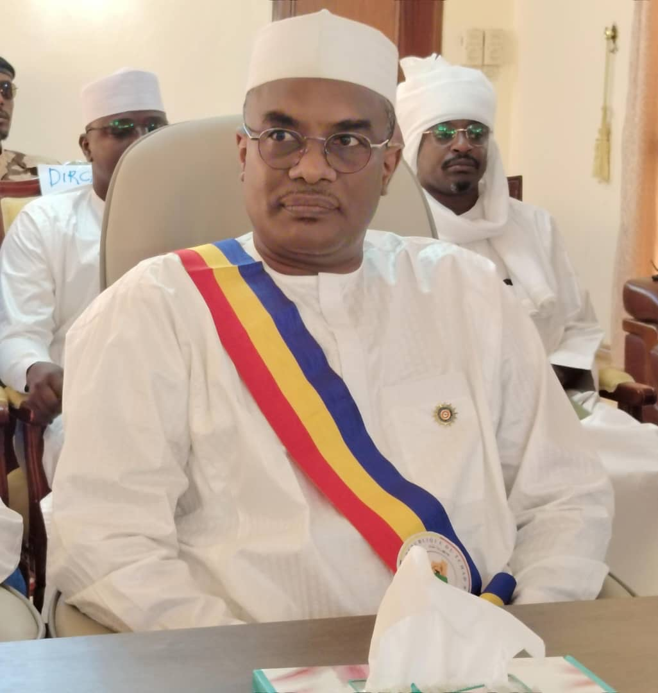
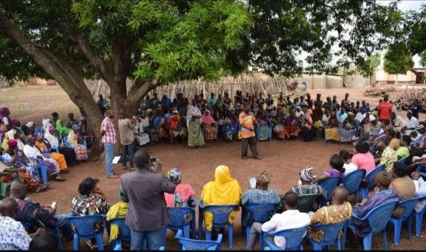
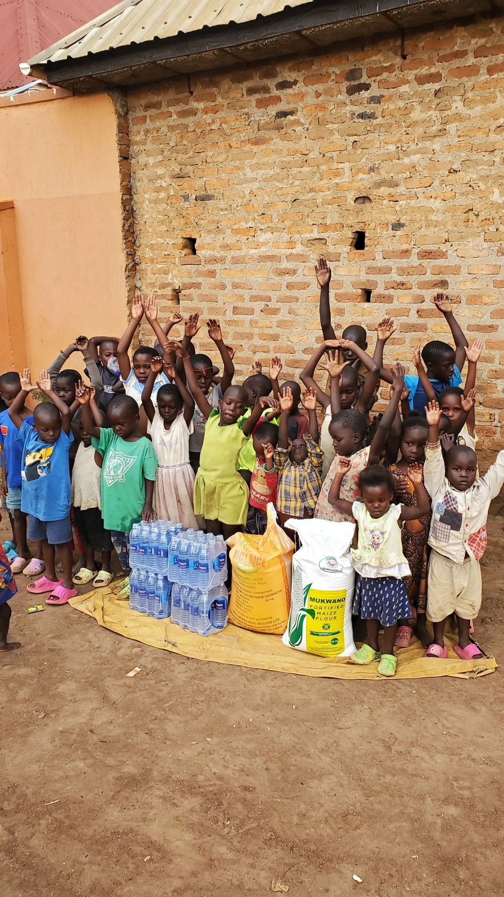
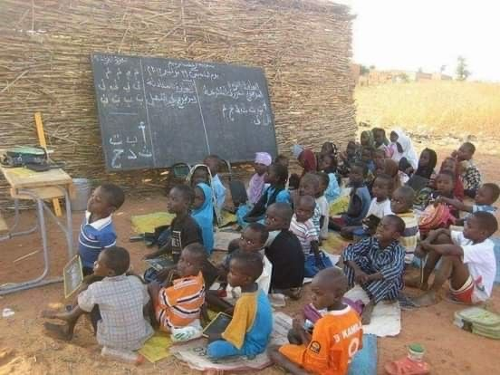

Nos Services
Le Conseil Provincial du Batha met à disposition des populations et des partenaires un ensemble de services visant à améliorer le cadre de vie et à soutenir les initiatives locales.

Appui aux projets de développement communautaire
Le Conseil provincial du Batha accompagne les communautés locales dans l’identification, la conception et la mise en œuvre de projets de développement adaptés aux réalités locales, favorisant un impact durable.

Accompagnement des initiatives des jeunes et des femmes
Un appui particulier est accordé aux initiatives portées par les jeunes et les femmes afin de renforcer leur autonomisation économique, sociale et leur participation au développement local.
Coordination des actions sociales et humanitaires
Le Conseil provincial assure la coordination des actions sociales et humanitaires avec les partenaires institutionnels et les ONG afin d’optimiser l’impact des interventions sur le terrain.

Sensibilisation et information des citoyens
Des campagnes de sensibilisation et d’information sont menées pour renforcer la participation citoyenne, promouvoir la paix, la cohésion sociale et la bonne gouvernance.
Suivi et évaluation des projets locaux
Le Conseil provincial assure le suivi et l’évaluation des projets locaux afin de garantir la transparence, l’efficacité et la durabilité des actions menées au bénéfice des populations.

Appui à l’éducation et à la formation
Le Conseil provincial du Batha soutient les initiatives éducatives et de formation professionnelle afin de renforcer les compétences des jeunes et favoriser leur insertion socio-économique au sein de la province.
Appui à la résilience et à la sécurité alimentaire
Le Conseil provincial du Batha soutient les actions visant à renforcer la résilience des populations face aux crises alimentaires, en appuyant l’agriculture, l’élevage et les initiatives locales destinées à améliorer la sécurité alimentaire et les moyens de subsistance.
Médiation sociale et gestion des conflits
Le Conseil provincial du Batha intervient dans la médiation sociale afin de prévenir et résoudre les conflits communautaires. À travers le dialogue, la concertation et l’implication des autorités traditionnelles, il favorise la paix durable et la stabilité sociale dans la province.